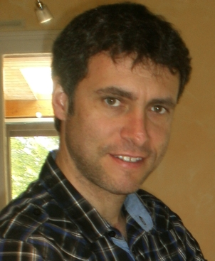

Turbulence Modelling

By Dr Rémi MANCEAU
This course is made of two parts:
- Introductory lectures on turbulence modelling, a course common with students of the ENSMA engineering school;
- A series of tutorials focused on particular aspects.
Outline of the introductory lectures:
-
Introduction to CFD (Computational Fluid Dynamics)
- Different phases and important points of a simulation: geometric modelling, meshing, physical modelling, computation, post-processing; Evaluation of computational costs linked with turbulence, computer power available today and implications for modelling;
- Different existing methods (RANS, hybrid, LES, DNS) : objectives, formalism, modelling, maturity, fields of application;
- CFD codes: commercial codes (Fluent, StarCD, CFX, Powerflow), in-house industrial codes, open-source codes (Open-Foam, Code_Saturne).
- Standard method used in industrial design: RANS modelling (Reynolds-averaged Navier-Stokes modelling):
- Closure problem, different levels of modelling, history;
- Similarity with continuum mechanics (constitutive relations), physical principles;
- Eddy-viscosity models: hypotheses, selection of the constitutive relation, k-epsilon models, k-omega models, Spalart-Almaras model, etc.: limits, corrections, variations;
- Reynolds-stress models: hypotheses, advantages, limitations, modelling of the different physical processes, algebraic models;
- Wall regions: physics, joint selection of the mesh and the model, law of the wall, low-Reynolds number models.
- Eddy-resolving methods:
- URANS and semi-deterministic models;
- Large-eddy simulation (LES): filtering, subgrid-scale stresses, modelling;
- Hybrid RANS/LES methods;
- i. Zonal methods: principle, issue of the interface;
- ii. Continuous methods: VLES, LNS, DES, SAS, PANS, PITM;
- Modelling of turbulent heat transfers:
- Non-dimensional numbers, convection regimes and simplifying assumptions;
- Simple models for the forced convection regime: simple and generalized gradient hypotheses, mechanical and thermal length/time scales;
- Modelling in the mixed/natural convection regimes: influence of buoyancy on the Reynolds stresses, modelling of the transport equations for the turbulent heat fluxes.
List of tutorials:
- Quick review of Kolmogorov's theory and its link with length/time scale evaluation in turbulence modelling.
- The dynamics of homogeneous turbulence under various constraints (pure decay, plane strain, shear) and implications for turbulence modelling.
- Evaluation of turbulence length scales in wall bounded turbulence and consequences for the simulation of turbulent flows.
- Educated guess of the parameters to perform a good computation using different classes of turbulence models (mesh, computational domain, boundary conditions, numerical schemes).
- Accounting for curvature effects on turbulent boundary layers.
- Near-wall asymptotics and implications for turbulence models and boundary conditions.
- Application of the general principles of turbulence modelling to the case of the triple moments.
- Forced and mixed convection in plane channels.